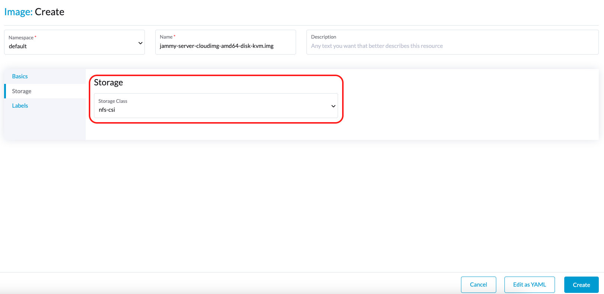

Compatibilidad con almacenamiento de terceros
SUSE Virtualization admite la provisión de volúmenes raíz y volúmenes de datos utilizando controladores externos Interfaz de almacenamiento de contenedores (CSI). Esta mejora permite seleccionar controladores que cumplan con requisitos específicos, como la optimización del rendimiento o la integración sin problemas con soluciones de almacenamiento interno existentes.
El equipo de SUSE Virtualization ha validado los siguientes controladores CSI:
-
Motor de Datos Longhorn V2:
driver.longhorn.io -
LVM:
lvm.driver.harvesterhci.io -
NFS:
nfs.csi.k8s.io -
Rook (Dispositivo de Bloques RADOS):
rook-ceph.rbd.csi.ceph.com
Estos controladores CSI validados tienen las siguientes capacidades:
| Solución de Almacenamiento | Imagen de VM | Disco Raíz de VM | Disco de Datos de VM | Exportar volumen a imagen de VM | Generador de plantillas de VM | Migración en vivo de VM | Instantánea de VM | Copia de seguridad de VM |
|---|---|---|---|---|---|---|---|---|
Motor de Datos Longhorn V2 |
✔ |
✔ |
✔ |
✔ |
✔ |
✔ |
✔ |
✔ |
LVM |
✔ |
✔ |
✔ |
✔ |
✔ |
✖ |
✔ |
✖ |
NFS |
✔ |
✔ |
✔ |
✔ |
✔ |
✔ |
✖ |
✖ |
Rook (Dispositivo de Bloques RADOS) |
✔ |
✔ |
✔ |
✔ |
✔ |
✔ |
✔ |
✖ |
|
El soporte para almacenamiento de terceros equivale al soporte para la provisión de volúmenes raíz y volúmenes de datos utilizando controladores de interfaz de almacenamiento de contenedores externos (CSI). Esto significa que los proveedores de almacenamiento pueden validar sus dispositivos de almacenamiento con SUSE Virtualization para garantizar una mayor interoperabilidad. Puedes encontrar información sobre soluciones de almacenamiento de nivel empresarial que están certificadas como compatibles con SUSE Virtualization en la documentación de SUSE Rancher Prime, que es accesible a través del SUSE Customer Center. |
Requisitos previos
Para permitir que SUSE Virtualization funcione bien, utiliza controladores CSI que soporten las siguientes capacidades:
-
Expansión de volúmenes (redimensionamiento en línea)
-
Creación de instantáneas (instantáneas de volúmenes y máquinas virtuales)
-
Clonación (clones de volúmenes y máquinas virtuales)
-
Uso de volúmenes de lectura-escritura-muchos (RWX) para Migración en vivo
Crea un clúster de SUSE Virtualization
El sistema operativo de SUSE Virtualization sigue un diseño inmutable, lo que significa que la mayoría de los archivos del sistema operativo vuelven a su estado preconfigurado después de un reinicio. Por lo tanto, es posible que necesites realizar configuraciones adicionales antes de instalar el clúster de SUSE Virtualization para controladores CSI de terceros.
Algunos controladores CSI requieren vías persistentes adicionales en el host. Puedes añadir estas vías a os.persistent_state_paths.
Algunos controladores CSI requieren paquetes de software adicionales en el host. Puedes instalar estos paquetes con os.after_install_chroot_commands.
|
Actualizar versión SUSE Virtualization provoca que los cambios en el sistema operativo en la etapa |
Instala el controlador CSI
Después de completar la instalación del clúster de SUSE Virtualization, consulta ¿Cómo puedo acceder al archivo kubeconfig? para obtener el kubeconfig del clúster.
Con el kubeconfig del clúster SUSE Virtualization, puedes instalar los controladores CSI de terceros en el clúster siguiendo las instrucciones de instalación para cada controlador CSI. También debes consultar la documentación del controlador CSI para crear el StorageClass y el VolumeSnapshotClass en el clúster SUSE Virtualization.
Configura el clúster SUSE Virtualization
Antes de que puedas hacer uso de las funciones de Copia de seguridad e instantánea de SUSE Virtualization, necesitas realizar algunas configuraciones esenciales a través de la configuración SUSE Virtualization csi-driver-config. Sigue estos pasos para realizar estas configuraciones:
-
Inicia sesión en la interfaz de usuario de SUSE Virtualization, luego navega a Ajustes avanzados →.
-
Encuentra y selecciona csi-driver-config, y luego selecciona ⋮ → Editar Configuración para acceder a las opciones de configuración.
-
Establece el Provisioner al controlador CSI de terceros en la configuración.
-
A continuación, configura el Nombre de Clase de Instantánea de Volumen. Esta configuración apunta al nombre del
VolumeSnapshotClassutilizado para crear instantáneas de volúmenes o instantáneas de VM.

|
La copia de seguridad actualmente solo funciona con lo siguiente:
Si estás utilizando otros proveedores de almacenamiento, puedes omitir la configuración del Nombre de Clase de Instantánea de Volumen de Copia de Seguridad. Para más información, consulta Compatibilidad de Copia de Seguridad de Máquina Virtual. Si el provisionador de StorageClass no está en la lista de provisionadores con acceso y modos de volumen predeterminados del CDI, debes anotar el StorageClass con |
Utiliza el controlador CSI
Una vez que el controlador CSI está instalado y el SUSE Virtualization clúster está configurado, se puede utilizar una solución de almacenamiento externa en tareas que implican la gestión del almacenamiento.
Creación de imágenes de máquina virtual
Puedes utilizar una solución de almacenamiento externa para almacenar y gestionar imágenes de máquinas virtuales.
Cuando subas una imagen de máquina virtual utilizando la SUSE Virtualization interfaz (Imagen → Crear), debes seleccionar la Clase de Almacenamiento para la solución de almacenamiento externa en la pestaña Almacenamiento. En el siguiente ejemplo, la Clase de Almacenamiento es nfs-csi.

SUSE Virtualization almacena la imagen creada en la solución de almacenamiento externa.

Creación de máquinas virtuales
Tus máquinas virtuales pueden utilizar volúmenes raíz y de datos en almacenamiento externo.
Cuando crees una máquina virtual utilizando la SUSE Virtualization interfaz (Máquina Virtual → Crear), debes realizar las siguientes acciones en la pestaña Volúmenes:
-
Selecciona una imagen de máquina virtual almacenada en la solución de almacenamiento externa y luego configura los ajustes requeridos.
-
Añade un volumen de datos.

En el siguiente ejemplo, el volumen raíz se crea utilizando NFS, y el volumen de datos se crea utilizando el motor de Datos Longhorn V2.

Creación de volúmenes
Puedes crear volúmenes en tu solución de almacenamiento externa.
Cuando crees un volumen utilizando la SUSE Virtualization interfaz (Volúmenes → Crear), debes realizar las siguientes acciones:
-
Clase de Almacenamiento: Selecciona la Clase de Almacenamiento objetivo (por ejemplo, nfs-csi).
-
Modo de Volumen: Selecciona el modo de volumen correspondiente (por ejemplo, Sistema de Archivos).

Temas avanzados
Perfiles de almacenamiento
Ahora puedes utilizar la API de CDI para crear perfiles de almacenamiento personalizados perfiles de almacenamiento que simplifican la definición de volúmenes de datos. Los perfiles de almacenamiento permiten que múltiples volúmenes de datos compartan la misma configuración de aprovisionador.
El siguiente es un ejemplo de un perfil de almacenamiento LVM:
apiVersion: cdi.kubevirt.io/v1beta1
kind: StorageProfile
metadata:
name: lvm-node-1-striped
spec:
claimPropertySets:
- accessModes:
- ReadWriteOnce
volumeMode: Block
status:
claimPropertySets:
- accessModes:
- ReadWriteOnce
volumeMode: Block
cloneStrategy: snapshot
dataImportCronSourceFormat: pvc
provisioner: lvm.driver.harvesterhci.io
snapshotClass: lvm-snapshot
storageClass: lvm-node-1-stripedPuedes definir los campos para sobrescribir la configuración predeterminada. Para más información, consulta Perfiles de Almacenamiento en la documentación de CDI.
|
Evita cambiar el perfil de almacenamiento o CDI directamente. En su lugar, permite que el controlador SUSE Virtualization sincronice y persista la configuración del perfil de almacenamiento mediante el uso de anotaciones de CDI. |
limitaciones
-
El soporte de copias de seguridad está actualmente limitado a SUSE Storage volúmenes. SUSE Virtualization no puede crear copias de seguridad de volúmenes en almacenamiento externo.
-
Hay una limitación en el CDI que impide que SUSE Virtualization convierta PVCs adjuntos en imágenes de máquina virtual. Antes de exportar un volumen en almacenamiento externo, asegúrate de que el PVC no esté adjunto a cargas de trabajo. Esto evita que la imagen resultante se quede atascada en el estado de Exportando.

Despliegue del controlador NFS CSI
|
Puedes desplegar el controlador NFS CSI solo cuando el servidor NFS ya esté instalado y en funcionamiento.
Si el servidor ya está en funcionamiento, verifica la opción |
-
Instala el controlador utilizando el gráfico Helm
csi-driver-nfs.$ helm repo add csi-driver-nfs https://raw.githubusercontent.com/kubernetes-csi/csi-driver-nfs/master/charts $ helm install csi-driver-nfs csi-driver-nfs/csi-driver-nfs --namespace kube-system --version v4.10.0 -
Crea la StorageClass para NFS.
Para más información sobre los parámetros, consulta Parámetros del Controlador: Uso de la Clase de Almacenamiento en la documentación del Controlador NFS CSI de Kubernetes.
apiVersion: storage.k8s.io/v1 kind: StorageClass metadata: name: nfs-csi provisioner: nfs.csi.k8s.io parameters: server: <your-nfs-server-ip> share: <your-nfs-share> # csi.storage.k8s.io/provisioner-secret is only needed for providing mountOptions in DeleteVolume # csi.storage.k8s.io/provisioner-secret-name: "mount-options" # csi.storage.k8s.io/provisioner-secret-namespace: "default" reclaimPolicy: Delete volumeBindingMode: Immediate allowVolumeExpansion: true mountOptions: - nfsvers=4.2Una vez creada, puedes utilizar la StorageClass para crear imágenes de máquinas virtuales, volúmenes raíz y volúmenes de datos.
Problemas conocidos
1. Bucle infinito de descarga de imágenes
El proceso de descarga de imágenes se repite indefinidamente cuando la StorageClass de la imagen utiliza el controlador LVM CSI. Este problema está relacionado con el volumen scratch, que es creado por CDI y se utiliza para almacenar temporalmente los datos de la imagen. Cuando el problema existe en tu entorno, puedes encontrar los siguientes mensajes de error en los registros del pod importer-prime-xxx:
E0418 01:59:51.843459 1 util.go:98] Unable to write file from dataReader: write /scratch/tmpimage: no space left on device
E0418 01:59:51.861235 1 data-processor.go:243] write /scratch/tmpimage: no space left on device
unable to write to file
kubevirt.io/containerized-data-importer/pkg/importer.streamDataToFile
/home/abuild/rpmbuild/BUILD/go/src/kubevirt.io/containerized-data-importer/pkg/importer/util.go:101
kubevirt.io/containerized-data-importer/pkg/importer.(*HTTPDataSource).Transfer
/home/abuild/rpmbuild/BUILD/go/src/kubevirt.io/containerized-data-importer/pkg/importer/http-datasource.go:162
kubevirt.io/containerized-data-importer/pkg/importer.(*DataProcessor).initDefaultPhases.func2
/home/abuild/rpmbuild/BUILD/go/src/kubevirt.io/containerized-data-importer/pkg/importer/data-processor.go:173
kubevirt.io/containerized-data-importer/pkg/importer.(*DataProcessor).ProcessDataWithPause
/home/abuild/rpmbuild/BUILD/go/src/kubevirt.io/containerized-data-importer/pkg/importer/data-processor.go:240
kubevirt.io/containerized-data-importer/pkg/importer.(*DataProcessor).ProcessData
/home/abuild/rpmbuild/BUILD/go/src/kubevirt.io/containerized-data-importer/pkg/importer/data-processor.go:149
main.handleImport
/home/abuild/rpmbuild/BUILD/go/src/kubevirt.io/containerized-data-importer/cmd/cdi-importer/importer.go:188
main.main
/home/abuild/rpmbuild/BUILD/go/src/kubevirt.io/containerized-data-importer/cmd/cdi-importer/importer.go:148
runtime.mainEl mensaje no space left on device indica que el sistema de archivos creado utilizando el volumen scratch no es suficiente para almacenar los datos de la imagen. CDI crea el volumen scratch en función del tamaño del volumen de destino, pero se pierde algo de espacio debido a la sobrecarga del sistema de archivos. El valor de sobrecarga predeterminado es 0.055 (equivalente al 5.5%), que es suficiente en la mayoría de los casos. Sin embargo, si el tamaño de la imagen es inferior a 1 GB y su tamaño virtual está muy cerca del tamaño de la imagen, es probable que la sobrecarga predeterminada sea insuficiente.
La solución alternativa es aumentar la sobrecarga del sistema de archivos al 20% utilizando el siguiente comando:
# kubectl patch cdi cdi --type=merge -p '{"spec":{"config":{"filesystemOverhead":{"global":"0.2"}}}}'La imagen debería descargarse una vez que se haya aumentado la sobrecarga del sistema de archivos.
|
Aumentar el valor de sobrecarga no afecta al tamaño del PVC de la imagen. El volumen scratch se elimina después de que se importa la imagen. |
Problema relacionado: #7993 (Ver este comentario.)
2. Soporte para múltiples rutas
El servicio multipathd está deshabilitado en SUSE Virtualization por defecto. Sin embargo, ciertos CSIs de terceros pueden requerir que habilites el servicio.
Después de instalar SUSE Virtualization, puedes habilitar e iniciar multipathd iniciando sesión en cada nodo del clúster y ejecutando los siguientes comandos:
systemctl enable multipathd
systemctl start multipathdAlternativamente, puedes crear un archivo SUSE® Rancher Prime: OS Manager CloudInit en el directorio /oem en cada host (por ejemplo, /oem/99-start-multipathd.yaml) con el siguiente contenido:
stages:
default:
- name: "start multipathd"
systemctl:
enable:
- multipathd
start:
- multipathdEste proceso se puede automatizar en todo el clúster de Harvester utilizando un CloudInit CRD.
apiVersion: node.harvesterhci.io/v1beta1
kind: CloudInit
metadata:
name: start-mutlitpathd
spec:
matchSelector:
harvesterhci.io/managed: "true"
filename: 99-start-mutlitpathd
contents: |
stages:
default:
- name: "start multipathd"
systemctl:
enable:
- multipathd
start:
- multipathd
paused: false